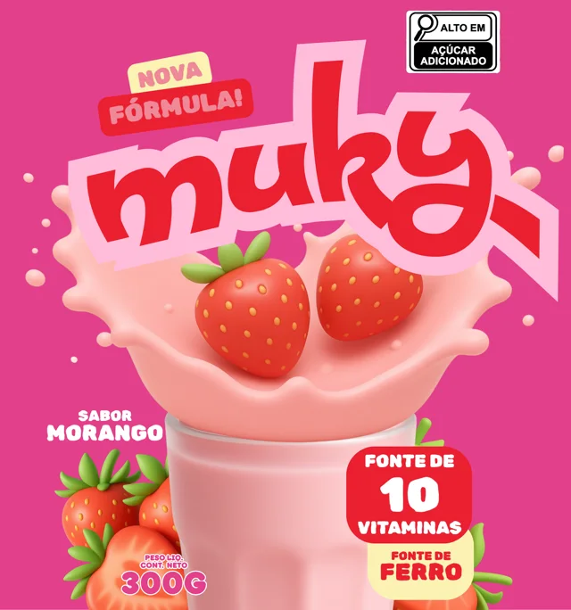
01↗
Muky Redesign
Redesign do rótulo sabor morango. Clique para ver o estudo de caso.
Sobre
Passe o mouse em uma palavra
Estudante de Design Gráfico, primeira edição aos 11 anos. Tenho uma mini gráfica, brinco com impressões 3D e estou mergulhando em UI/UX. Me inspira gente com a própria cara, e meu passatempo favorito é dar um up em tudo que é genérico ✨
Trabalhos

Redesign do rótulo sabor morango. Clique para ver o estudo de caso.
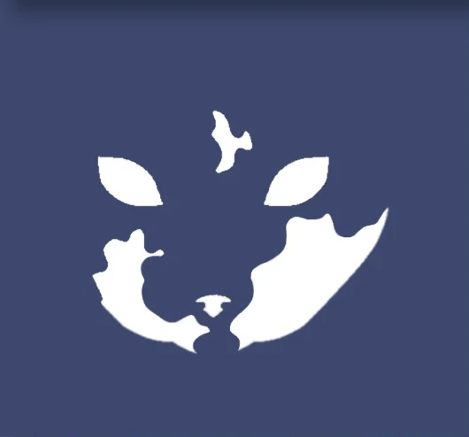
Estudo de logo inspirado na minha gata Dixie. Clique para ver o estudo de caso.
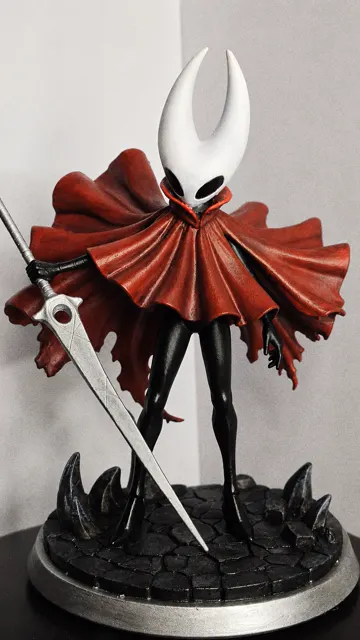
Galeria de miniaturas impressas em 3D em 2026. Clique para abrir.
Projetos
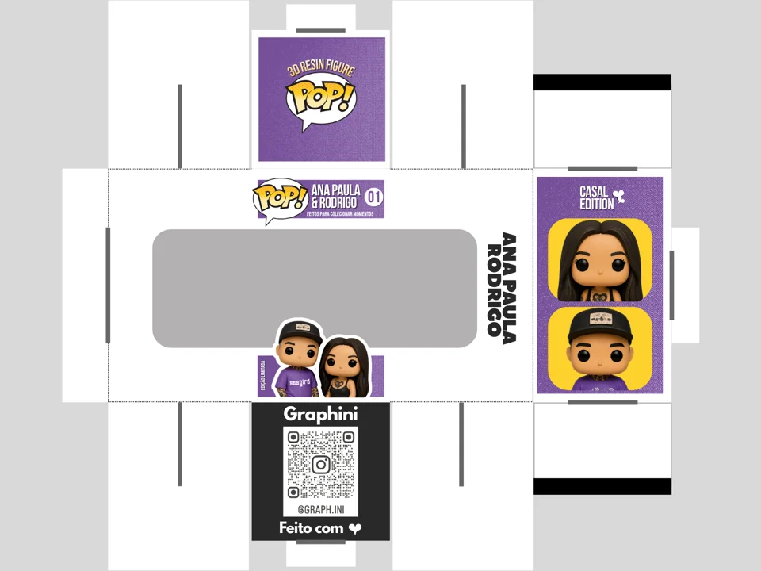
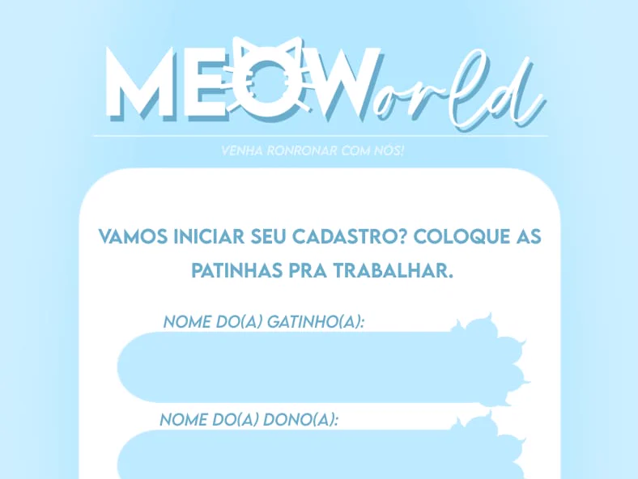
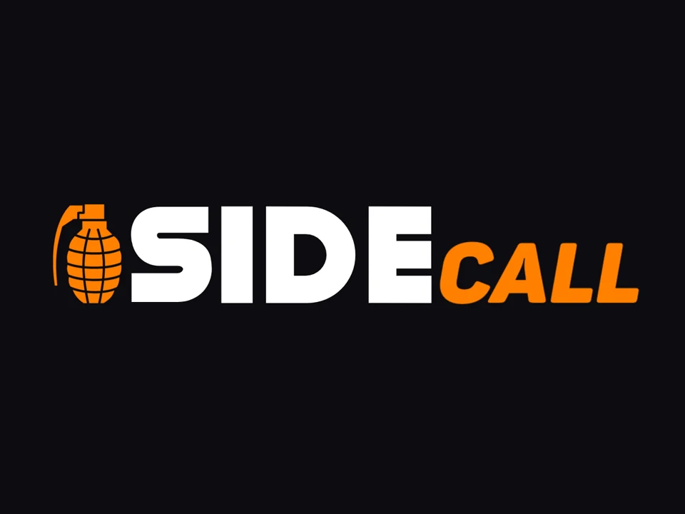
Galeria
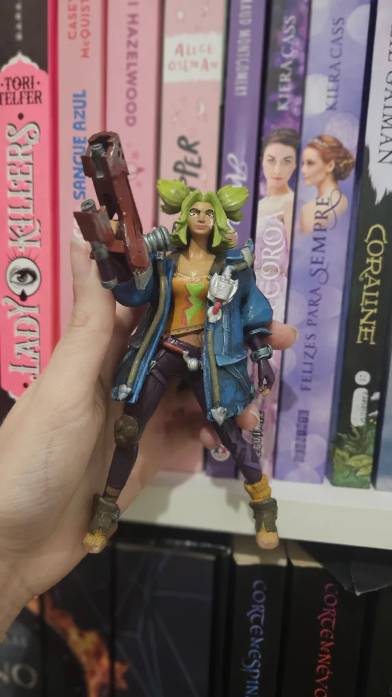
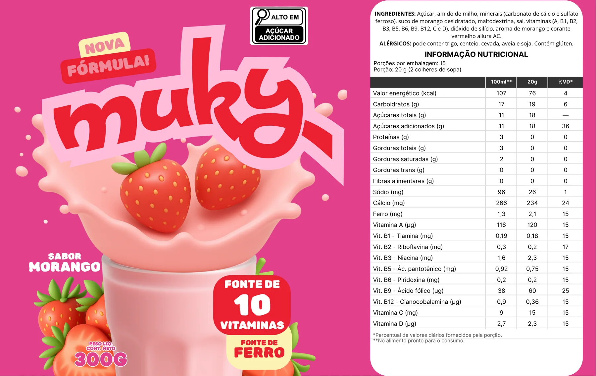
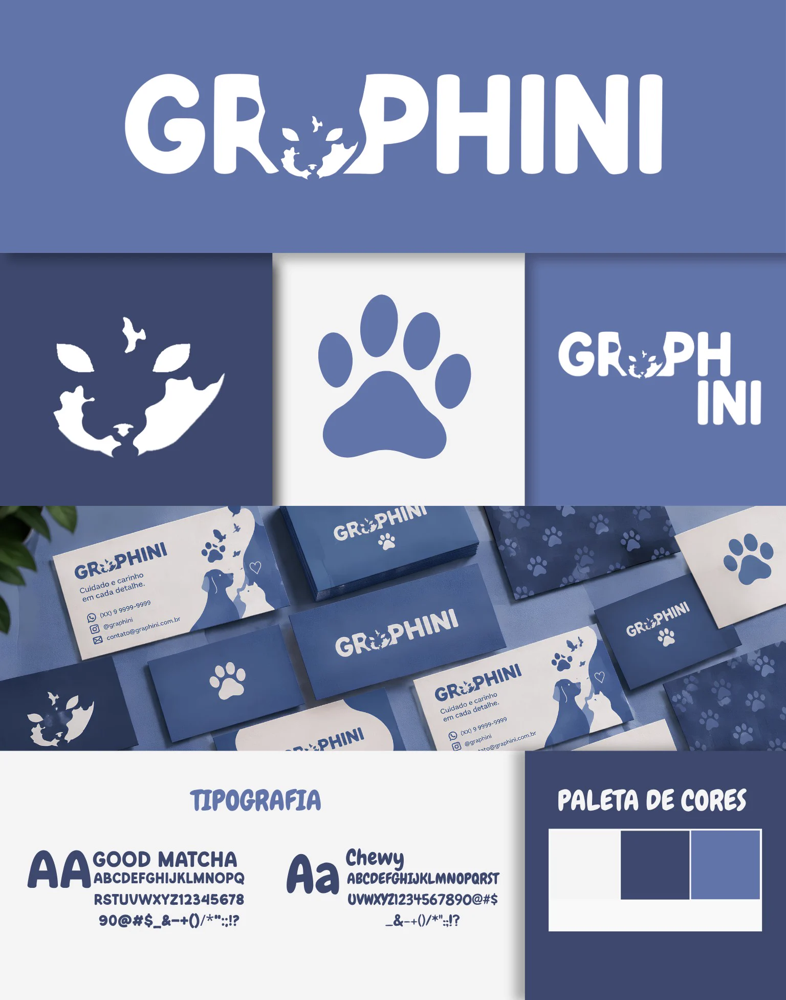
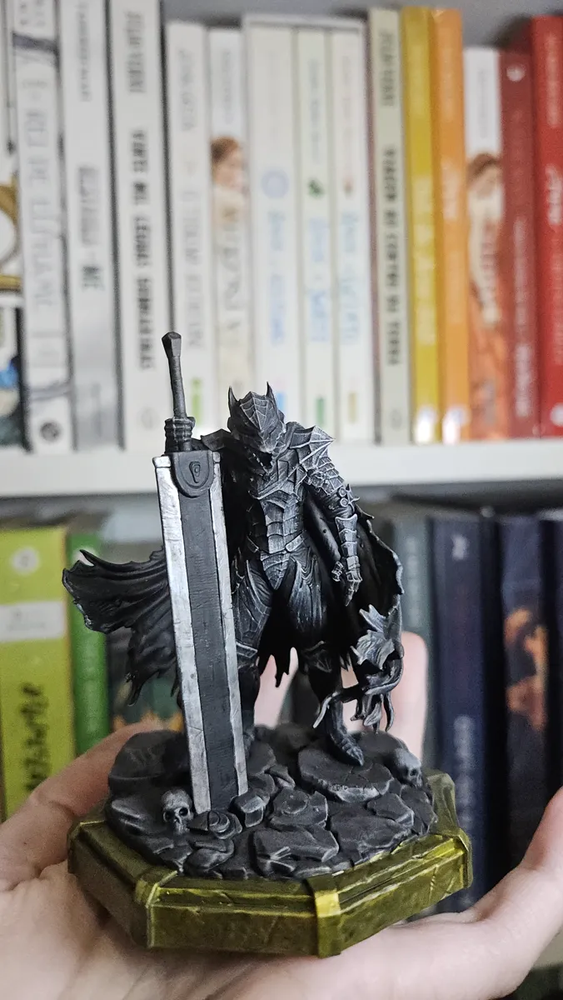
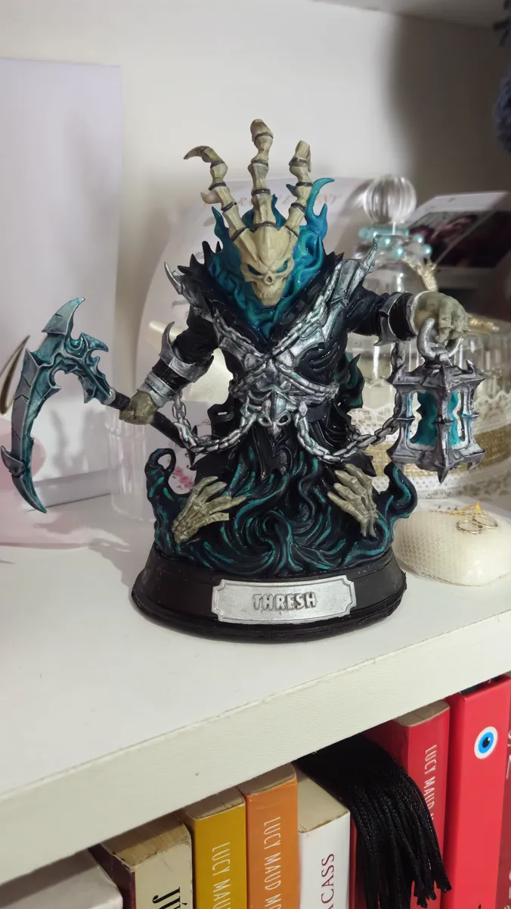
Cooperações
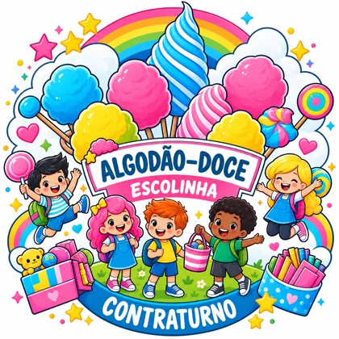
Projetos sempre que a escolinha precisa.
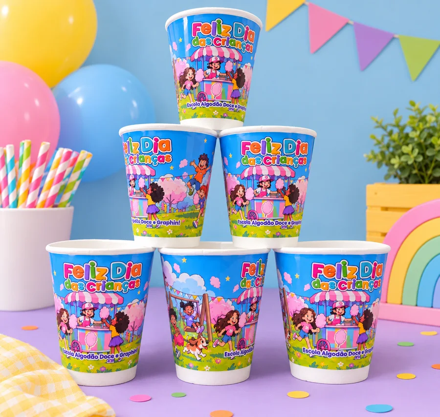
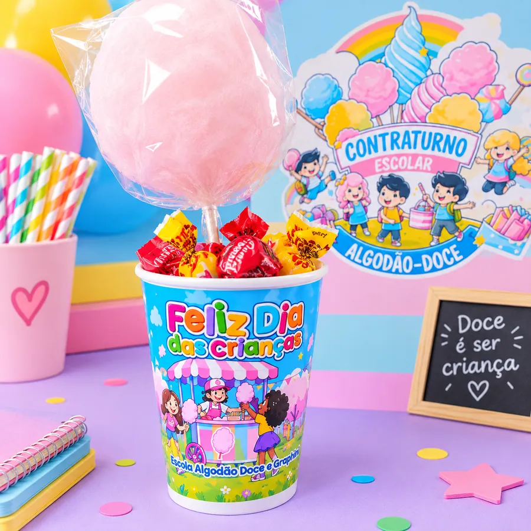
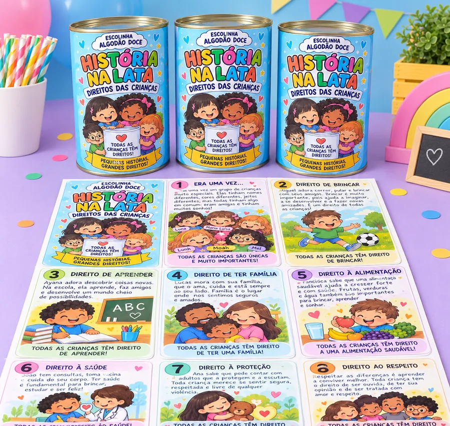
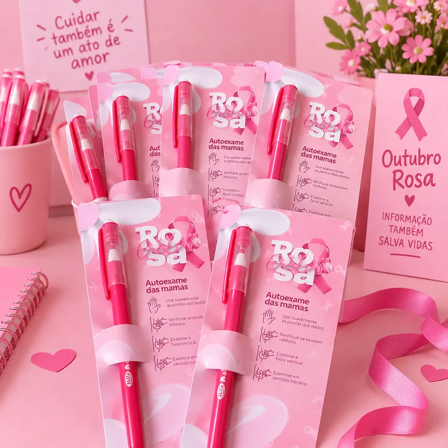
Trajetória
Capinhas e postagens para páginas do Facebook.
Capas para livros de amigas e edições de perfil para Facebook, Twitter e Tumblr.
Ganhei meu primeiro notebook que vira tablet e tentei me aperfeiçoar em desenho. Não eram nada bons, mas davam pro gasto!
Capas, fotos, vídeos e edições de personagens para perfis de RPG: acessórios, cor de cabelo, piercings e muito mais.
Percebi que era com isso que eu queria trabalhar e comecei a faculdade.
Estudando, cuidando da minha mini gráfica e procurando meu primeiro estágio.